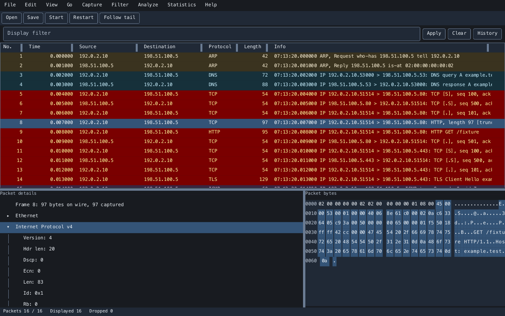

Packet inspection,
written in Ruby.
Open a capture, filter the traffic, and read each protocol alongside its bytes. Follow the conversation from the packet list to the full TCP stream.
Start with a capture file
gem install vanken
vanken capture.pcapngRuby 3.3+ · Desktop, terminal, and headless inspection

LinuxCapture and inspection
macOSCapture and inspection
WindowsFile inspection
pcap / pcapngRead, save, and export
From traffic to protocol details.
Keep the capture, its conversations, and the original bytes within reach.
- Inspect every layer
- Browse a virtual packet list, expand the protocol tree, and select fields to highlight their bytes. Add typed protocol fields as custom columns.
- Find the packets that matter
- Filter with protocol fields and addresses, search text or bytes, and use editable coloring, marks, time references, and conversation navigation.
- Follow the conversation
- Reconstruct both directions of a TCP stream, handle retransmissions and missing data, search the content, and save the full stream.
- See the capture as a whole
- Explore protocol hierarchy, conversations, endpoints, expert information, and filtered I/O graphs. Export packets or dissections as JSON, text, or CSV.
- Capture as your regular user
- A separate capture helper handles device access. Configure permissions once, then stop automatically or rotate capture files while inspecting traffic.
- Work in your own setup
- Choose the desktop or terminal interface, Japanese or English, and light, dark, or high-contrast themes. Keep preferences and analysis extensions in profiles.
Open your first capture.
Install the gem and open an existing pcap or pcapng file. Select a row to inspect its protocols and bytes, then apply a display filter to narrow the packet list.
For live traffic, set up capture permissions and choose an interface. Run the application as your regular user.
Get startedDesktop
vanken capture.pcapngTerminal
vanken --tui capture.pcapngFilter from the command line
vanken --headless --read capture.pcapng \
--print-columns --filter 'tcp.port == 443'